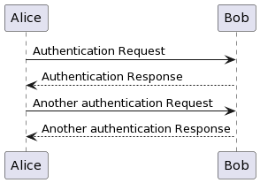

Phase 1
The goal of this phase is to get participating teams to prototype their solutions.
Mission and Vision
Mission
Vision
System Requirements
Technological Requirements:
- The unmanned boats must be equipped with autonomous navigation systems.
- They should incorporate mechanisms for debris collection and disposal.
- Integration of environmental sensors for monitoring water quality is encouraged.
Innovation and Sustainability:
- Emphasis will be placed on innovation, creativity, and sustainability in boat design and operation.
- Projects should prioritize eco-friendly materials and energy-efficient systems.
Documentation
- Each team must submit a project proposal detailing their boat design, technology, and operational strategy.
-
Finalists will be required to present a detailed technical report and demonstrate their boat's functionality.
-
The solution must comprise two parts
RQ001the USVRQ002capable of manual and pre-planned navigation- capable of recording video of the front of the vehicle
- capable of recording video of the garbage collection part of the vehicle
- capable of
RQ002a docking station which is capable ofRQ003charging batteries, orRQ004replacing batteriesRQ005unloading collected garbage
- When deploying the solution in a test/real site
RQ005multiple docking stations may be usedRQ006only one USV may be deployedRQ
Design Constraints
| Criteria | Constraint |
|---|---|
| All up weight (dry dock, without garbage) | < 25kg |
| Power supply | Solar + Electric power supply |
| Power storage | Battery |
| Dimensions | < 1.5m (length) x 1.0m (width) x 0.5m (height) |

Proposal Submission
- Teams prepare and submit their project proposals detailing their unmanned boat designs, technology integration, and operational strategies.
- Proposals undergo review by a panel of judges based on predefined criteria.
- Shortlisting of teams for the next phase based on proposal evaluation.
Development and Testing:
-
Shortlisted teams commence the design and development phase of their unmanned boats.
-
Implementation of innovative technologies, integration of sensors, and testing of autonomous navigation systems.
-
Continuous iteration and refinement of boat prototypes based on testing results and feedback.
Final Presentation Preparation:
- Teams prepare detailed technical reports outlining their design process, technological innovations, and environmental impact assessments.
- Development of presentations to showcase their projects, highlighting key features, functionalities, and sustainability aspects.
- Practice sessions for effective communication and presentation skills.
Final Presentations and Demonstrations:
- Finalist teams present their projects to a panel of judges, providing comprehensive insights into their unmanned boat designs and functionalities.
- Demonstrations of boat operation, including autonomous navigation, debris collection, and environmental sensing capabilities.
- Q&A sessions with judges to address inquiries regarding project implementation and sustainability measures.
Evaluation and Winners Announcement
- Judges evaluate each presentation and demonstration based on predefined criteria.
- Deliberation to determine the winners of the competition.
- Announcement of winning teams and distribution of prizes.
- Recognition of outstanding achievements and innovations showcased by participating teams.
Post-Competition Activities
- Dissemination of successful project outcomes and lessons learned through publications, presentations, and media coverage.
- Collaboration opportunities with environmental organizations and industry partners to further develop and implement unmanned boat technologies for river cleaning initiatives.
- Feedback solicitation from participants to improve future iterations of the competition.